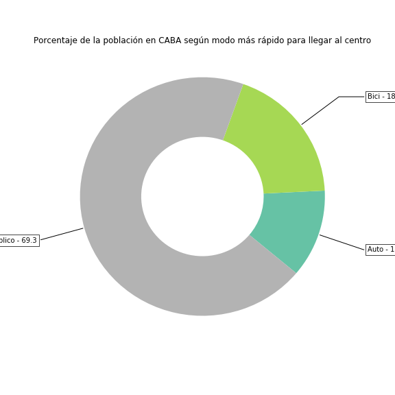
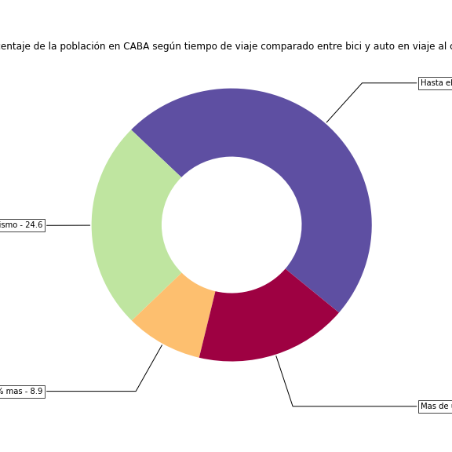

Estos mapas intentan responder a la pregunta: ¿me conviene ir a trabajar en bici?
Son una visualizaición interactiva de un proyecto anterior. Tomamos solamente tiempo de viaje, sin contar tiempo de estacionar en el uso del auto. Para más datos pueden consultar el artículo en Medium.
El primer mapa nos muestra los diferentes tiempos (en minutos) desde cada punto de la ciudad al centro (Perón a la altura de Plaza de Mayo). Si despliegan el menú de capas van a poder elegir el modo que quieren visualizar en el mapa. La barra de arriba indica el tiempo de viaje en minutos.
Tiempos de viaje al centro según modo de transporte
El siguiente mapa resume esa información estableciendo para cada zona, cuál es el modo más rápido.
Modo más rapido según zona de la ciudad
En el último mapa, hacemos una comparación del tiempo de viaje de la bici en comparación con el auto. En azul, por ejemplo, van a ver las zonas para las cuales el viaje en bici es hasta un 80% del viaje en auto.
Tiempos de viaje en bici como porcentaje de los tiempos en auto
Para concluir ofrecemos dos gráficos con medidas que resumen la idea. Por un lado, solo el 12% de la población de CABA vive en zonas donde les conviene ir en auto al centro (sin contar tiempo de estacionamiento). A su vez, a casi un 20% de los porteños les conviene viajar en bici al centro.
Finalmente, si no usa criterios más relajados, y permite que si en lugar de 10 minutos tardo 12 yendo en bici, al 80% de la población le conviene usar la bici antes que el auto.
